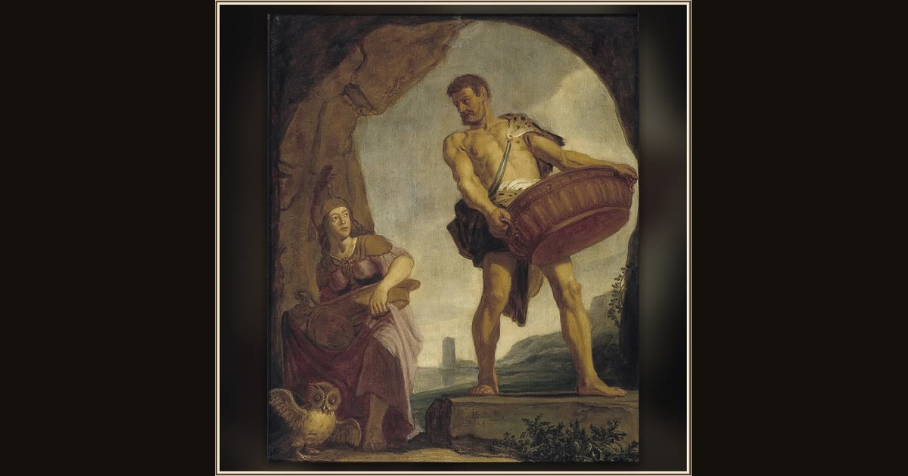

Odysseus and Minerva
Pieter Lastman · 1625 · Museum Het Rembrandthuis · Amsterdam, Netherlands
Pieter Lastman — Rembrandt’s own teacher — paints the goddess Minerva meeting Odysseus, the wise protector who never abandons her favorite hero. Explore its place in Book I of the Odyssey.